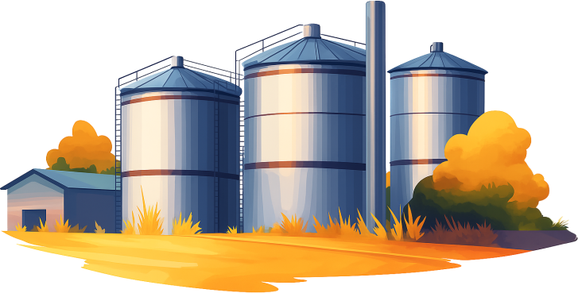
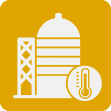
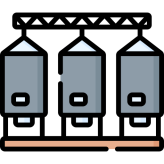
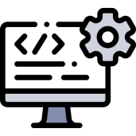
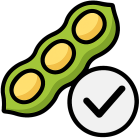

O Brasil segue crescendo no setor agrícola, especialmente no plantio de soja. Porém, após a colheita, surge um grande desafio de armazenamento dos grãos. Nas cooperativas, o silo vertical é um dos modelos mais utilizados, trazendo diversos benefícios. No entanto, seu uso também pode gerar problemas como condensação, bolsas de calor e proliferação de fungos. Essas situações aceleram a deterioração dos grãos e podem causar prejuízos significativos, impactando diretamente o lucro.

Ocorre quando o calor gerado pela respiração dos grãos e pelo ambiente não consegue se dissipar, fazendo os grãos iniciarem o ciclo de deterioração.
Fenômeno que ocorre quando a temperatura externa cai, resfriando as paredes do silo. O ar úmido entra em contato com a superfície fria e se condensa em gotas de água, favorecendo a deterioração.
A combinação de calor e umidade no silo cria condições ideais para a proliferação de fungos e insetos, acelerando a deterioração dos grãos e reduzindo sua qualidade.

O período de armazenamento é decisivo para preservar a qualidade da soja, e nossa missão é apoiar as cooperativas nesse processo, oferecendo mais segurança, eficiência e inteligência para a gestão dos silos.
Com nosso sistema de monitoramento em tempo real, as cooperativas passam a ter controle preciso da temperatura e da umidade, recebendo alertas automáticos que permitem agir de forma rápida e preventiva.
Assim, o armazenamento deixa de ser um ponto de risco e passa a ser uma vantagem para toda a cooperativa, garantindo mais valor e segurança na comercialização dos grãos.
Minimiza em até 20% das perdas por condensação, pragas e fungos já nos primeiros 3 meses.

Interface web para monitoramento em tempo real, além de alertas automáticos, otimizando operações.

Permitir que as condições de armazenamento permaneçam dentro dos níveis ideais.

Possibilitar os grãos serem armazenados por mais tempo, aproveitando preços de mercado mais favoráveis.
Você pode entrar em contato através dos nossos contatos no site ou pelas redes sociais oficiais da SustentaTech. Nossa equipe está pronta para atender rapidamente!
Nossos sensores monitoram temperatura e umidade em tempo real dentro dos silos, enviando os dados automaticamente para o nosso sistema web.
Utilizamos sensores de alta precisão desenvolvidos especificamente para ambientes agrícolas, garantindo medições confiáveis e durabilidade.
345 Faulconer Drive, Suite 4 • Charlottesville, CA, 12345
(11) 4228-8982